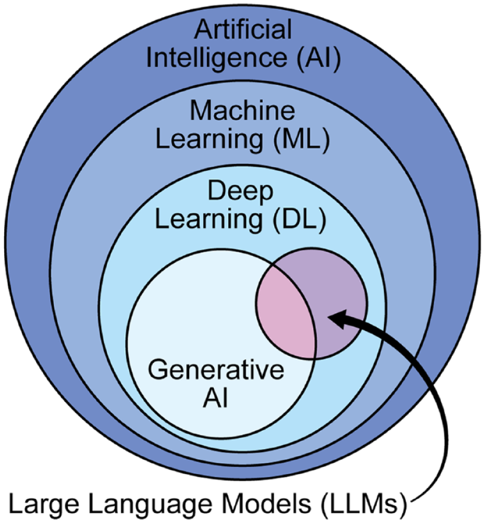

Large Language Models (LLMs) - Introduction
What is a Large Language Model?
A Large Language Model is a deep neural network trained on extensive datasets containing text from books, articles, websites, and other sources sometimes encompassing large portions of the entire publicly available text on the internet.
LLMs have remarkable capabilities in understanding, generating, and interpreting human language, code, and even multimodal data (text, images, audio).

A language model predicts the next word in a sequence given the preceding words. The models are trained to predict the next word in a sentence, given the preceding words. This training process allows them to learn grammar, facts about the world, reasoning abilities, and even some level of common sense.
Mathematical Definition
Mathematically, a language model estimates the probability distribution over a sequence of tokens. The joint probability of a sequence $W = (w_1, w_2, \dots, w_T)$ is factorized using the chain rule of probability:
$$ P(w_1, w_2, \dots, w_T) = \prod_{t=1}^{T} P(w_t \mid w_1, \dots, w_{t-1}) $$
The core objective is to learn the conditional probability of the next token $w_t$ given the history $w_{<t}$:
$$ P(w_t \mid w_{<t}) $$
Where: - $w_t$ is the token to be predicted at step $t$. - $w_{<t} = (w_1, \dots, w_{t-1})$ is the context of preceding tokens. - $P(w_t \mid w_{<t})$ is the probability of the next word $w_t$ conditioned on the sequence of previous words.
 [Image source][1]
[Image source][1]
The "large" aspect refers to the model's size, which is typically measured in terms of: - Parameter count: Typically >1B parameters (e.g., GPT-3: 175B, Llama 3: 8B-405B) [2] - Training data: Trillions of tokens (e.g., Llama 3 trained on 15T tokens) [3] - Compute: Thousands of GPU-hours for training
These models can have billions or even trillions of parameters, enabling them to capture complex patterns in language.

Some Applications of Large Language Models
-
Chatbots and Virtual Assistants: LLMs power conversational agents that can understand and respond to user queries in a human-like manner.
-
Natural Language Processing (NLP): LLMs are widely used in NLP tasks such as sentiment analysis, named entity recognition, and text classification.
-
Content Generation: LLMs can generate coherent and contextually relevant text, making them useful for content creation, summarization, and translation.
-
Code Generation: LLMs can assist in generating code snippets, automating repetitive coding tasks, and even debugging code.
-
Education and Tutoring: LLMs can provide personalized learning experiences, answer questions, and assist with homework.
-
Creative Writing: LLMs can collaborate with authors by generating ideas, suggesting plot twists, and even writing poetry or stories.
-
Research Assistance: LLMs can help researchers by summarizing papers, generating hypotheses, and even conducting literature reviews.
These applications demonstrate the versatility and potential of Large Language Models in transforming how we interact with technology and information.
Why build your own LLM?
- Domain-specific models - can outperform general models like ChatGPT, Claude, etc. e.g., Models trained for law, medical question answering, etc.
- Cost-effectiveness - cheaper to run your own LLM than to use cloud-based services.
- Data Privacy - you have control over the data used to train the model, prevent sensitive data being sent to model providers
- Customized Deployment - you can deploy the model on your own infrastructure or edge devices
- Autonomy - you can control the model's behavior, update it and fix it
Building and Using LLMs
Building and using LLMs involves several steps, including data collection, preprocessing, model selection, training, and evaluation.

1. Data Collection and Preprocessing: Data collection is the first step in building an LLM. It involves gathering a large and diverse dataset of text data from various sources, such as books, articles, websites, and social media platforms. Typically several terabytes or petabytes of data are required to train a large LLM.
2. Pretraining: Pretraining involves training a large language model on a large dataset of text data. The model is trained to predict the next token in a sequence of tokens, given the preceding tokens. This training process allows the model to learn the patterns and relationships in the data, which can then be used for a variety of downstream tasks.
3. Fine-tuning: Fine-tuning adapts a pretrained model for specific tasks and aligns it to human preferences.
4. Inference: Inference involves using the model to generate text based on a given input. The model is used to generate text based on a given input, which can be used for a variety of downstream tasks.
In our course, we'll not cover data collection and pretraining from scratch, but will focus on fine-tuning, inference optimization, and building applications using LLMs. Pre-training and data engineering require significant resources and are beyond the scope of this course. We shall use existing pretrained models from open-source repositories like HuggingFace and focus on engineering aspects of LLMs.
Code Example: Next-Token Prediction with HuggingFace
from transformers import AutoModelForCausalLM, AutoTokenizer
model = AutoModelForCausalLM.from_pretrained("gpt2")
tokenizer = AutoTokenizer.from_pretrained("gpt2")
inputs = tokenizer("The capital of France is", return_tensors="pt")
outputs = model.generate(**inputs, max_new_tokens=5)
print(tokenizer.decode(outputs[0]))
# Output: "The capital of France is Paris, and the"
Demo
- Text Generation
- Vision-Language Model
- Audio Generation
Exercise
- Login to Google Colab
- Run shared notebooks
- Visit HuggingFace, explore trending models, spaces and datasets. Use this HuggingFace Tutorial as reference.
References
- The Illustrated GPT-2 - Jay Alammar
- Language Models are Few-Shot Learners (GPT-3) - Brown et al., 2020
- Llama 3 Technical Report - Meta AI, 2024
- Hands-On Large Language Models by Jay Alammar, Maarten Grootendorst